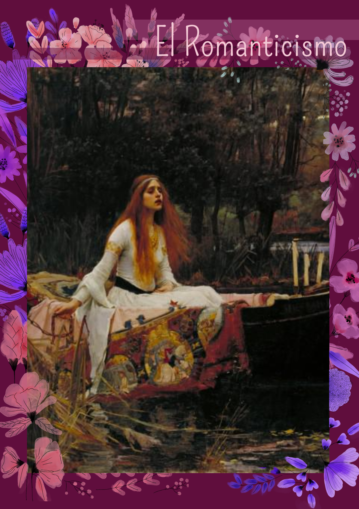

Bienvenidos a El Romanticismo, aquí tienes uno de los dos retos de completar el puzzle (nivel avanzado).
En este caso tenemos a la obra Lámina La dama de Shalott de Posterlounge, una de las más representativas de esta época tan magna
¿Cómo se juega?
Para resolver el puzzle intercanmbia las fichas con aquella de color violeta
arrastrando la imagen a la posición deseada. Para hacerlo, debes tener en
cuenta que la ficha que quieres mover debe ser adyacente a aquella
dispuesta para moverse (ficha de color violeta).
¿Dónde está la imagen original?
Para poder ver la imagen original de puzzle, debes dar click en el botón "Pistas", solo puedes abrirla una vez y permanecerá ahí, no la puedes cerrar. Ahí también encontraras un pequeño texto con más pistas.
¿Para qué sirve el contador de abajo?
Su función es contar la cantidad de movimientos que realizas hasta terminar el puzzle
¡Trata de resolverlo en la cantida mínima de movimientos y mejora tu record!
Qué esperas para jugar!! ---->
Postdata: Puedes abrir este cuadro de texto cuantas veces quieras

Pista: Desarrolla el Puzzle de abajo para arriba y de izquierda
a deracha, para mayor facilidad.
Pista: Busca las piezas menos detalladas e identifica cada una